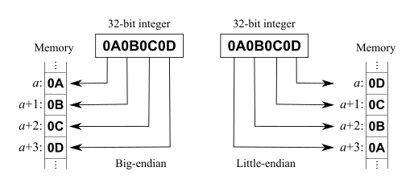

# x86 Endianness
The endianness of data describes whether the most significant byte (big-endian) or least significant byte (little-endian) is ordered first.
• The most siginificant byte is the 1st byte in the sequence
• The least siginificant byte is the last byte in the sequence
• For example, in
0x0a0b0c0d:
◇
0a is the most significant byte
◇
0d is the least signifiant byte
In the big-endian format, the value won't change (the most significant byte is first):
0x0a0b0c0dIn the little-endian format, the value will be reversed (working backwards from the least significant byte)
0x0d0c0b0aThe x86 architecture is little endian.This means that the least significant byte is written first.